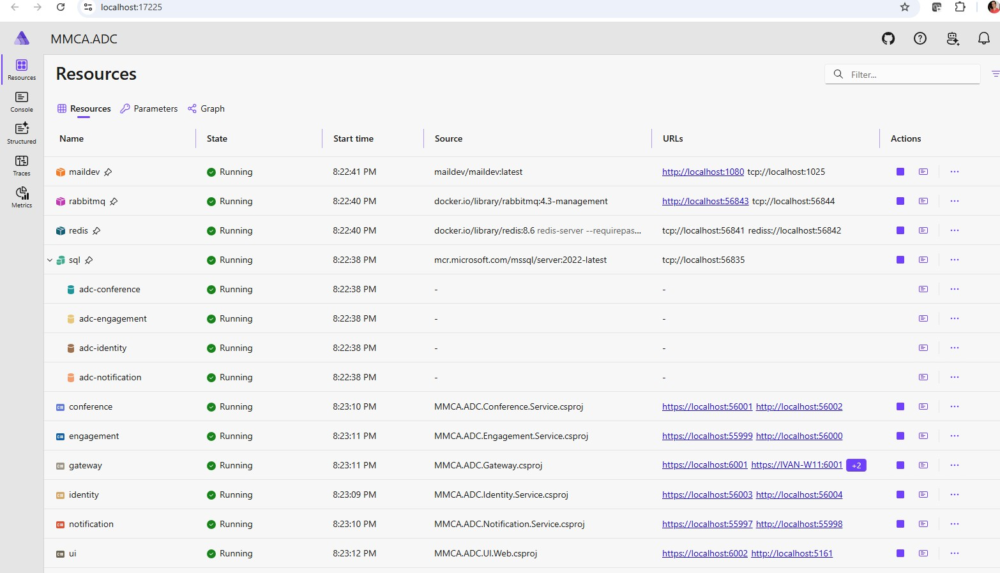
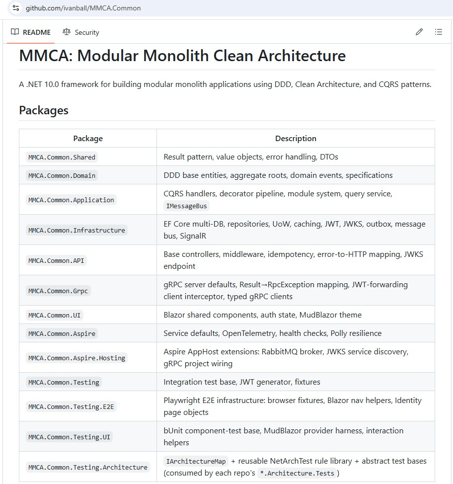

Featured work · Open source
The MMCA platform
A production-grade .NET 10 platform that demonstrates modern enterprise architecture end to end: an open-source framework of fifteen NuGet packages plus real applications that prove the patterns under live traffic. The design goal is one sentence: build the monolith now, extract a service later, without a rewrite.
Cleavestack ↗ is the commercial home of MMCA: build as one, ship as many.
The framework
MMCA.Common
A NuGet package framework for building modular-monolith applications with DDD, Clean Architecture, and CQRS, and the extension points to extract a module into its own microservice later. Fifteen packages release in lockstep and span every layer.
- Shared MMCA.Common.Shared Result pattern, value objects, error handling, DTOs
- Domain MMCA.Common.Domain Entities, aggregate roots, domain events, specifications
- Application MMCA.Common.Application CQRS handlers, the decorator pipeline, the module system
- Infrastructure MMCA.Common.Infrastructure EF Core multi-engine, repositories, caching, outbox, message bus, multi-tenancy, audit trail, job scheduler
- API & transport MMCA.Common.APIMMCA.Common.Grpc Controllers, middleware, idempotency, JWKS, gRPC contracts
- UI MMCA.Common.UIMMCA.Common.UI.WebMMCA.Common.UI.Maui Blazor shared components, MudBlazor theme, web and MAUI clients
- Hosting MMCA.Common.AspireMMCA.Common.Aspire.Hosting Aspire service defaults, OpenTelemetry, health checks, broker wiring
- Testing MMCA.Common.TestingMMCA.Common.Testing.ArchitectureMMCA.Common.Testing.E2EMMCA.Common.Testing.UI Integration bases, architecture rule library, Playwright and bUnit harnesses
Strict layered core
Shared → Domain → Application → Infrastructure → API/Grpc. The Result pattern carries expected failures, entities are rich aggregates with factory methods, and queries compose from specifications instead of LINQ spaghetti.
CQRS decorator pipeline
Thin command and query handlers wrapped by a Scrutor decorator chain: FeatureGate → Logging → Caching → Validating → Transactional → Handler. The order is load-bearing and registered once.
Extraction boundaries
Application code talks to abstractions; transport lives at the edge. A transport-agnostic message bus, gRPC contracts, JWKS cross-service auth, and Aspire hosting let a module become a service with no domain rewrite.
Proof, not slideware
Three reference applications
The framework is consumed by real apps. Each one exercises the patterns differently, and the conference app ran a live event on Azure.
MMCA.ADC
A production-deployed conference platform: four microservices (Identity, Conference, Engagement, Notification) behind a YARP gateway, cross-service JWKS auth, bidirectional gRPC, polyglot persistence, QR badge check-in with a live points leaderboard, and load testing at conference-day scale. It powered the Atlanta Cloud + AI Conference.
MMCA.Store
An e-commerce app refactored from a monolith into three microservices (Catalog, Sales, Identity) with Stripe payments, output caching, role-based access control, and an accessible Blazor and .NET MAUI UI.
MMCA.Helpdesk
The deliberately minimal seed: a single Tickets module exercised through all five layers. It is the worked companion to the framework's getting-started guide and the easiest entry point for exploring the patterns.
A look inside
From one graph, laptop to cloud
Orchestrated locally with .NET Aspire, then deployed to Azure Container Apps from the same declarative model.


How it holds together
Architecture principles
The same invariants are enforced across every repo, twice: a compile-time MSBuild layer guard and a shared NetArchTest rule library run as fitness functions.
Database-per-service, with an outbox
Each module or service owns its own database and outbox. Domain events are persisted atomically with the data, then delivered at least once, in-process for the monolith or over a broker once extracted. The outbox is the cross-source consistency mechanism.
Cross-service auth without shared secrets
Extracted services validate the issuer's RS256 tokens via JWKS / OIDC discovery, routed through the gateway with a direct fallback. No symmetric secret crosses a service boundary.
Soft-delete plus a right to erasure
Entities are soft-deleted for lifecycle and never hard-deleted; an anonymization pathway plus outbox purge satisfies GDPR/CCPA erasure. Audit fields are stamped automatically on every save.
Polyglot persistence behind one model
SQL Server, Cosmos DB, and SQLite sit behind a single entity model; the engine is an attribute on the configuration, orthogonal to the database-name axis. Plumbing shipped and tested.
Multi-tenancy without a fork
An opt-in tenant query filter composes with the soft-delete filter, a write interceptor refuses cross-tenant writes, and a per-tenant connection-string override buys full database isolation, all from the same entity model.
Enterprise capabilities, opt-in
A field-level audit trail written in the same transaction as the data, a data-subject export contract with app-registered sections, durable cron jobs built on the outbox's own claim lease, and CSV export on every entity endpoint. Nothing turns on until a host asks for it.
Graded honestly
A two-axis architecture scorecard
Every repo is scored against a 34-category rubric on two axes, Maturity (how complete the decision is) and Implementation (how well it is realized in code), with evidence and recorded gaps rather than a single vanity number.
Why, not just what
Architecture Decision Records
84 ADRs capture the context and trade-offs behind each cross-cutting pattern, so the design is teachable, not tribal knowledge. Every entry below links to the full record.
Read the source of truth
The reference library
The full architecture documentation, maintained in this site's repository as its canonical home and rendered as browsable pages: every Architecture Decision Record, the governance scorecards, the guides and specifications, and the complete onboarding guide that walks the codebase type by type.
Start here
Use it, read it, or follow along
The framework is Apache 2.0 and published to nuget.org. The fastest way in is the reference app: one module wired end to end through all five layers, with the extraction path already in place. Commercial support (assessments, workshops, embedded advisory) is available through Cleavestack.
Try the reference app
MMCA.Helpdesk is a runnable seed built against the framework, and the worked companion to the getting-started guide. Every step in the guide maps to real code in that repo.
Install the packages
Fifteen packages, released in lockstep at one version. One reference is usually enough to start: each package brings the layers below it.
Read the code
The framework and the reference app are public. The two production applications that track it are the source of the case-study material in the docs.
Get each deep dive by email
One message per article, no digests and no other mail.